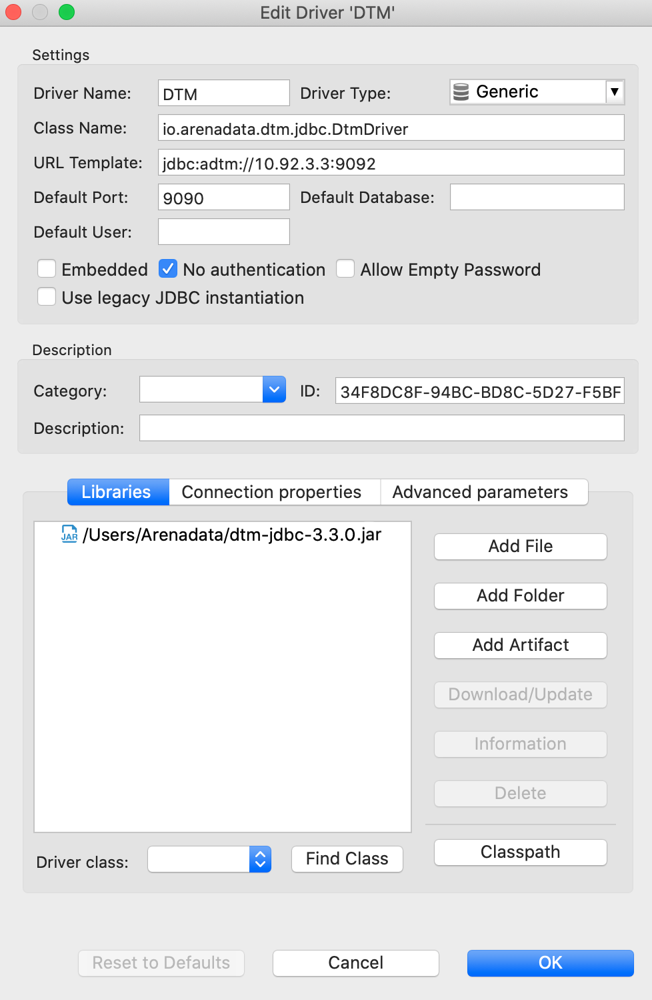
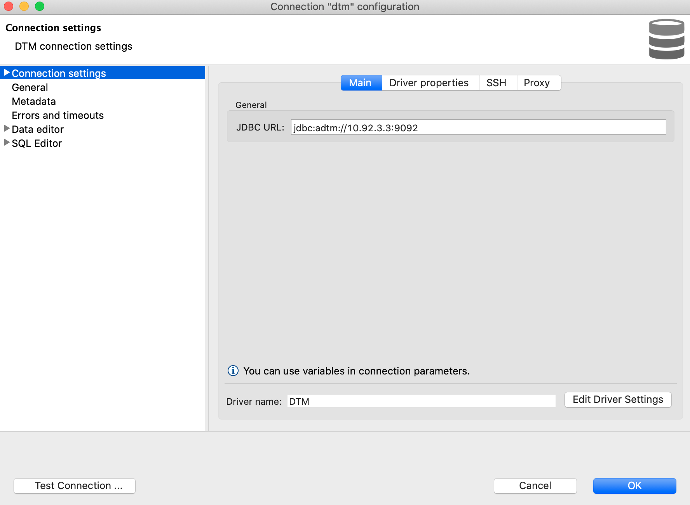

Подключение с помощью SQL-клиента
Перед настройкой подключения загрузите скомпилированный файл драйвера с именем dtm-jdbc-<version>.jar
в вашу файловую систему.
Чтобы настроить подключение к системе с помощью SQL-клиента:
- Откройте меню, отвечающее за добавление новых JDBC-драйверов. В SQL-клиенте DBeaver это меню
Driver Management, доступное в панели Database Navigator, в DataGrip — меню Data Sources.
- Добавьте новый драйвер со следующими настройками (см. рисунок ниже):
- (Driver) Name — произвольное имя драйвера, например DTM,
- (Class) Name —
io.arenadata.dtm.jdbc.DtmDriver,
- URL Template —
jdbc:adtm://{host}:{port}/{database},
- Default Port (если параметр присутствует) — 9090 или 9092.
- Нажмите кнопку Add (File) для добавления файла драйвера и выберите файл
dtm-jdbc-<version>.jar
в вашей файловой системе.
- Сохраните настройки драйвера.
- Настройте новое подключение к системе с использованием добавленного JDBC-драйвера и укажите
URL для подключения (например,
jdbc:adtm://10.92.3.3:9092).
После завершения настройки подключитесь к системе с помощью SQL-клиента.
На рисунке ниже показаны параметры JDBC-драйвера DTM в SQL-клиенте DBeaver.

Параметры JDBC-драйвера
На рисунке ниже показаны параметры подключения к системе с использованием драйвера DTM.

Параметры подключения к системе